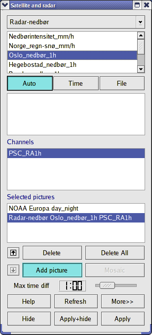

|  |
-
First select satellite/radar.
-
Then choose file type. When NOAA has been selected geographical areas
or classified satellite pictures can be chosen. For Meteosat, the
choices are; visual, infrared or water vapour.
-
The time can be selected in three different ways.
-
Auto - the time from the time slider is used.
-
Time - all times where pictures exist are shown and can be
selected from.
-
File - filenames are shown and can be selected from.
-
When "Time" or "File" is selected the satellite picture can not be
changed with the time slider or the animation-buttons.
-
Channel is selected.
-
Selected pictures show what is actually selected. Mark a picture
here if you want to delete it, swap plot-order or change the settings.
To add a picture to the list, click "Add picture" below
and repeat the steps above.
-
 Up/down arrows swaps the order the pictures are plotted.
Up/down arrows swaps the order the pictures are plotted.
-
Delete - button will delete the selected picture.
-
Delete all - deletes all the pictures.
-
Add picture - Adds a picture if any of the above settings
are changed. If this is not selected, the selected picture is
altered.
-
Mosaic - makes a mosaic of all the satellite
pictures available within the time intervall given in "Max time diff" for
the marked picture. The satellite closest to the plot time is on
the top of the mosaic.
-
Max time diff - maximum time difference between chosen time and
actual time. The picture closest in time
is always used.
-
Update - times and filenames are reread.
- More >> /<< Less displays more/less options/settings
for the selected picture.
|